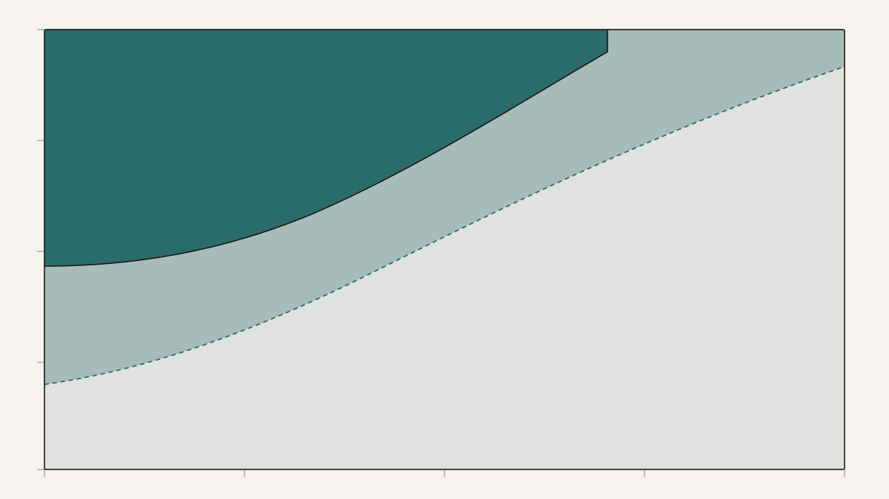
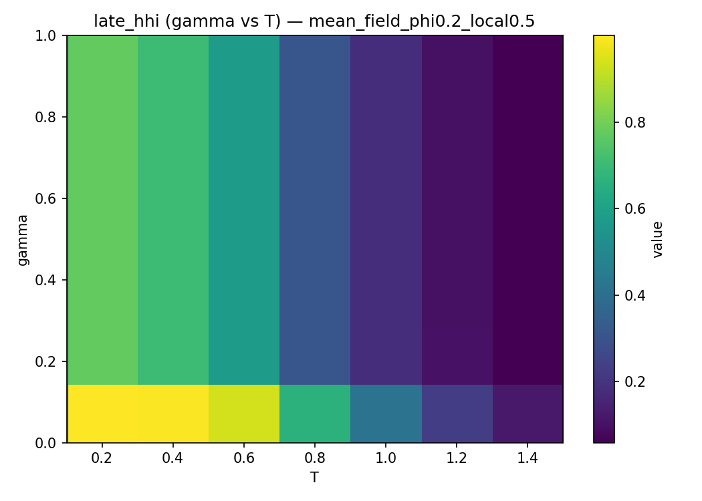
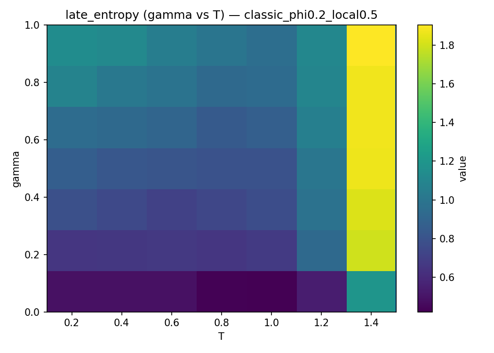
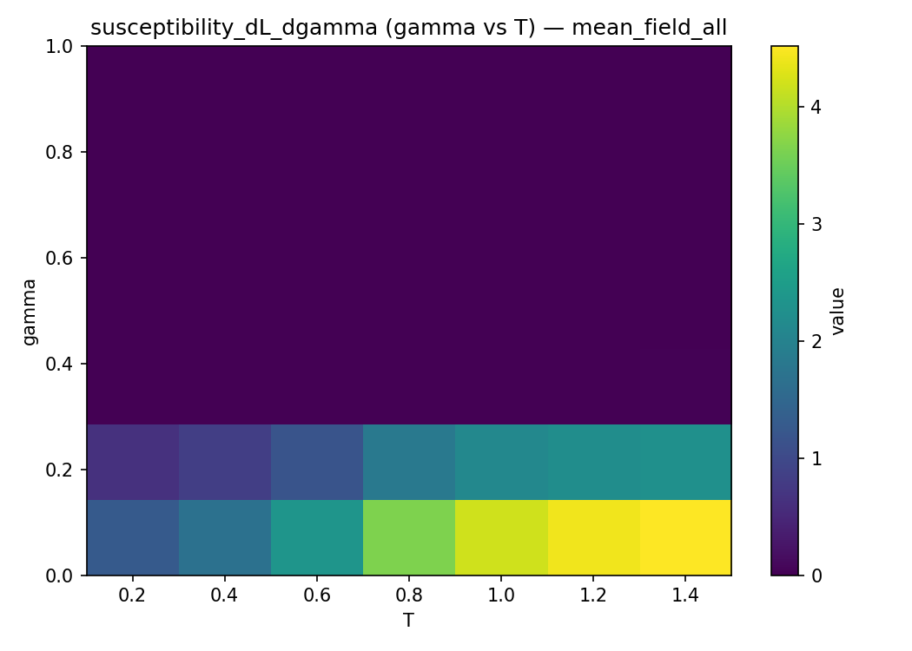
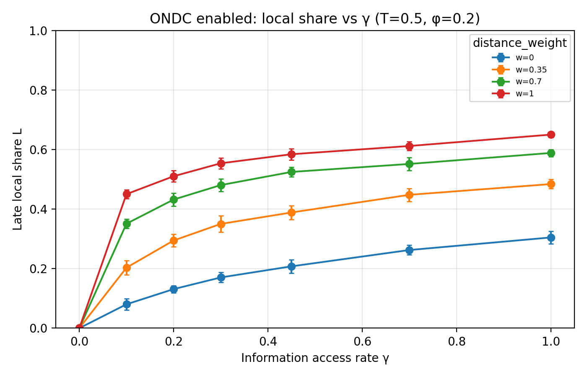

Statistical physics learned something useful about markets long before it was allowed to say so out loud. The useful thing is this: once you have a lot of almost-identical things that interact with each other and with a few global parameters, you can often describe their collective behaviour without knowing much about any individual. Water boils at 100°C whether the specific molecules are bored or excited about it. Markets, by the same logic, might concentrate or diversify according to a handful of global knobs whose effect has nothing to do with what any particular buyer is thinking. This essay is about trying to take that idea seriously for a specific question — the competition between digital platforms and local vendors — and about what happened when I did.
The question I wanted to press on was a tipping question. Digital platforms didn't arrive and immediately dominate every market. They grew, and in some sectors they captured nearly everything, and in others they didn't. The standard explanations for this — network effects, lock-in, switching costs — are all real, but they are structural descriptions of why concentration is possible. They don't tell you when a market actually flips, or what a small change in conditions would do. A collaborator I was working with on this kept returning to the same framing: "What does the market look like just before it tips?" That is a question about phase boundaries, and it is exactly the sort of thing a physicist has tools for.
The model, in its simplest form, is almost embarrassingly stripped down. A square unit of geography contains customers and local vendors as points, and digital vendors as delocalised entries with a delivery delay. At every round, each customer picks one vendor. The choice is not deterministic; it follows a Boltzmann rule,
\[P_{ij} = \frac{\exp(U_{ij}/T)}{\sum_{k} \exp(U_{ik}/T)},\]
where the utility \(U_{ij}\) combines price, rating, delay (distance for local vendors, a latency parameter for digital ones), a reinforcement term for past purchases, and a social-influence term. The denominator is taken over the vendors currently visible to the customer, which matters more than it looks like it should.
Three global parameters do almost all the work in this model. The first is the temperature \(T\), which controls how deterministic choices are. At \(T \to 0\), each customer picks the vendor with the highest utility and nothing else. At large \(T\) they might as well be rolling dice. The second is an information-access rate \(\gamma \in [0, 1]\), which governs how quickly customers discover local vendors. Digital vendors are visible by construction; local vendors are not. At \(\gamma = 0\), a nearby local baker could be next door and the customer will never order from them because they don't know the baker exists. The third is a social coupling strength \(J\) that amplifies the utility of vendors already popular in the previous round — popularity begets popularity, in an Ising-type feedback. These three parameters are the axes of the phase diagram.
The phases themselves are easy to describe once you have the order parameter. We tracked the steady-state local market share \(L^*\) — the fraction of all purchases going to local vendors after the dynamics have equilibrated — and from it a magnetisation-like quantity \(m\) that is positive when the market favours digital vendors and negative when it favours locals. Before showing the phase diagram from the simulation, it helps to have a cartoon of the three phases that will appear:
The three market phases, schematically. Dark dots are purchases going to digital vendors; teal dots are purchases going to locals. The phases are not about individual preferences — they are about which basin the aggregate settles into.
Digital Dominance (\(m > 0\), \(L^* < 0.5\)) sits in the low-information, low-noise corner: customers can't see local vendors, and the choices they make with the vendors they can see are deterministic enough to concentrate their purchases on a small set of them. Local Dominance (\(m < 0\), \(L^* > 0.5\)) is the opposite corner: enough information access to build up knowledge of nearby local vendors, and enough decisiveness to prefer them once the short Euclidean distance gives them a utility premium. Mixed Equilibrium (\(m \approx 0\)) is what happens at high temperature, regardless of \(\gamma\) — the softmax flattens, and market share ends up distributed roughly in proportion to how many vendors of each type are visible.
The central quantitative output is the phase diagram across the \((T, \gamma)\) plane. What it actually looks like is the less pretty but more informative part.

Steady-state local market share \(L^*\) across the \((T, \gamma)\) plane from the agent-based simulation. The low-γ band is almost entirely digital; the high-γ, low-T corner is almost entirely local. What matters in this image is the width of the crossover — and whether that width is a physical fact or an artefact of the engine generating it.
That last sentence is where the project stopped being a mapping exercise and became interesting. Because I ran the same sweep with two different simulation engines. The first is the agent-based model above — individual customers with individual histories, choosing stochastically each round. The second is a self-consistent mean-field fixed-point solver that treats the population as a single aggregate magnetisation \(m\) that updates against its own average field. The two are formally equivalent in the \(N \to \infty\) limit; the law-of-large-numbers argument is textbook. They should agree, and in the bulk of both ordered phases they do. Where they disagree is at the boundary.

The mean-field version of the same sweep. The overall topology is preserved, but the crossover is sharper, more vertical, and organised almost entirely along the \(T\) axis. The \(\gamma\) axis is visibly compressed. The same parameters produce qualitatively different-looking phase boundaries depending on which engine you ask.
The interesting diagnostic turned out to be susceptibility — the partial derivative of \(L^*\) with respect to each control parameter, computed numerically from the grid. In a physical phase transition, the susceptibility peaks along the critical line; the ridge of \(\chi_\gamma = \partial L^* / \partial \gamma\) is where the system is most responsive to information access, and the ridge of \(\chi_T = \partial L^* / \partial T\) is where it is most responsive to noise. When you plot both for both engines, something concrete happens.

Susceptibility maps. In the ABM, \(\chi_\gamma\) shows localised hotspots — specific cells where a small increase in information access produces a disproportionate gain in local share. In the mean-field engine, \(\chi_\gamma\) is near-zero almost everywhere. Both engines agree that \(T\) is an active control; they disagree about whether \(\gamma\) is.
Read that image the way you'd read a diagnostic. The ABM says: information access is a genuine dynamical control. In the places where the susceptibility is concentrated, a nudge in \(\gamma\) moves the market meaningfully. The mean-field solver says: \(\gamma\) barely matters. The difference is not noise. It is structural, and it has a mechanism. In the ABM, every customer is building up a visibility mask through repeated discovery events; the masks evolve round by round, and \(\gamma\) sets the rate at which that evolution happens. In the mean-field treatment, the consideration sets are frozen at their expected value. That approximation is fine when \(\gamma\) is either very low or very high — in both regimes the typical mask looks close to its average — but near the boundary, where the distribution of masks is wide and the dynamics depend on accumulating over time, the static-mask approximation loses the mechanism that makes \(\gamma\) matter.
I find this unexpectedly satisfying as a result, because it is the kind of thing that would be easy to miss. The two engines agree on their major claims: three phases, the same general geometry of the boundary, the same behaviour at large \(J\) where social coupling drives the transition first-order and recovers a bistable region with hysteresis. A paper summarising only those things would be internally consistent and quite misleading. The places where the engines disagree are the places where the simplification being made by the mean-field engine — freezing the consideration sets — stops being benign. Any model of this kind that takes \(\gamma\) seriously as a policy lever should probably be checked against an engine where \(\gamma\) is dynamically active.
There is a follow-up study that takes the same framework and asks a sharper policy question. If a recommendation system deliberately weights vendors by proximity — for instance, through an Open Network for Digital Commerce-style protocol with a distance weight \(w\) — how much does the market shift? The experiment is a two-parameter sweep over \(\gamma\) and \(w\) at fixed \(T\). The result is that \(\gamma\) acts as a gate: at \(\gamma = 0\) no amount of distance weighting produces any local share at all, because local vendors are never discovered. Once \(\gamma > 0\), \(w\) becomes the active knob. Moving \(w\) from \(0\) to \(1\) at a fixed \(\gamma = 0.3\) more than triples late-time local share, from about \(0.17\) to about \(0.55\), and roughly halves the HHI concentration index.

The \(\gamma \times w\) interaction slice at fixed \(T = 0.5\). Each curve is a different distance weight. \(\gamma = 0\) collapses them all to zero local share by construction; above that, the curves fan out, and the gap between low-\(w\) and high-\(w\) persists all the way to full discovery. Visibility is a necessary precondition, but distance weighting is a separate channel once that precondition is met.
The gated shape of that slice is the part I'd keep, even if the specific numbers are soft. It says something about how policy interventions of this kind work: no amount of protocol design helps sellers who never enter the consideration set, but once they do, even modest changes in how proximity is weighted can produce substantial shifts in aggregate structure. Two parameters, two jobs, and the order in which they matter is fixed.
What this whole exercise really reinforced for me is how fragile the intuition gets when you combine two reasonable-looking assumptions. Agent-based and mean-field models are both defensible framings of the same system. They disagree near the boundary not because one is wrong but because one of them is averaging over something that matters. The honest move, when you find a disagreement like that, is not to pick a winner. It is to ask what the averaging threw away, and whether the thing it threw away is the mechanism you were trying to study in the first place.